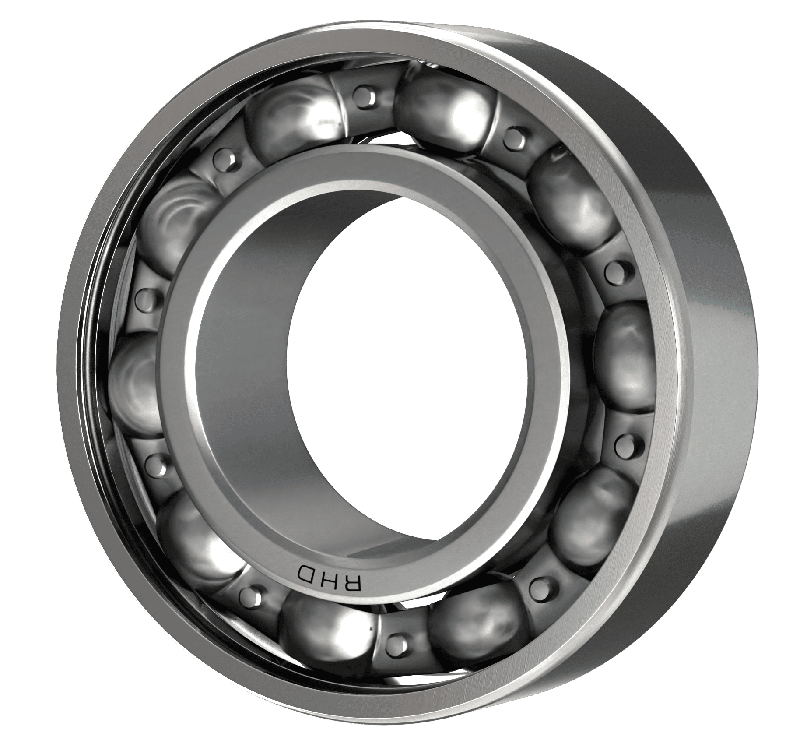

The versatile backbone of modern industry
The perfect balance of performance, economy, and reliability. These bearings are the backbone of modern industry, providing dependable service in countless applications from automotive systems to industrial machinery.

Engineered for industrial excellence & multi-application solutions
Heavy-duty industrial workhorse for standard applications. Reliable performance across automotive, manufacturing, and general industrial equipment.
Premium industrial performance. Our bestselling grade engineered for medium-duty motors and high-performance industrial equipment.
Maximum performance for demanding applications. Elite-grade bearings for high-speed motors and precision industrial equipment.
RHD's V3 Ultra and V4 Max 6000 series bearings are specifically engineered for the demanding industrial motor industry. Our advanced manufacturing processes and precision-grade materials deliver exceptional performance in medium to high-speed, moderate to heavy-load applications. From industrial pumps and compressors to precision machine tools, RHD bearings provide the reliability and durability that equipment manufacturers trust. With our V3 and V4 grades representing our primary offering in the industrial motor segment, we've invested heavily in optimizing these bearings for maximum performance, extended service life, and consistent quality that meets the rigorous demands of continuous industrial operations and critical manufacturing processes.
Comprehensive engineering data for industrial applications
| Specification | Range | Standard |
|---|---|---|
| Bore Diameter | 10mm - 100mm | ISO 15:2011 |
| Outer Diameter | 26mm - 150mm | ISO 15:2011 |
| Width | 8mm - 24mm | ISO 15:2011 |
| Load Capacity | 4.58kN - 64.5kN | ISO 281:2007 |
| Speed Range | 3,800 - 30,000 RPM | Oil lubrication |
| Temperature Range | -30°C to +120°C | Standard materials |
Complete range of 6000 series bearings for every application
Versatile performance across industries
Key Requirements: Reliability, temperature resistance, moderate loads
Key Requirements: Durability, multiple shift operation, easy maintenance
Key Requirements: Quiet operation, long life, cost effectiveness
Expert guidance for 6000 series bearing applications